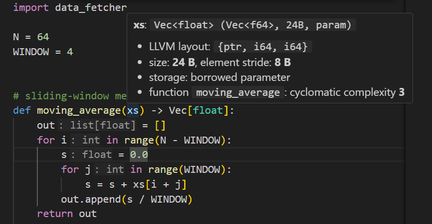

01 · SYNTAX & MEMORY
≤ 40 lines/fn · complexity ≤ 8
Python readability with flat C++ layout
Every .pa file parses with
standard ast.parse.
Function bodies stay free of type noise while bidirectional inference and escape
analysis place lists on the stack ([N x T])
or RAII-managed heap ({T*, len, cap}).
pac lsp · live inlay hints & hover memory audit
0 PyObject*
